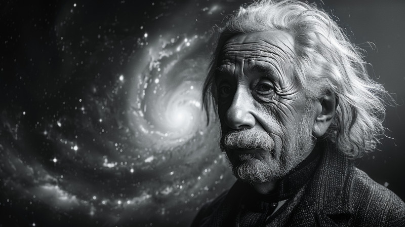
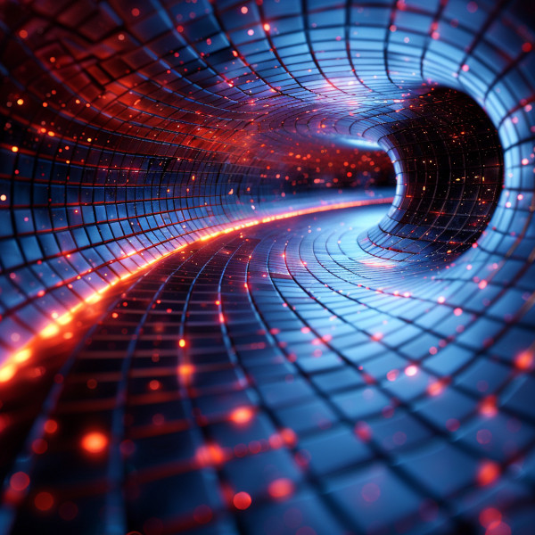
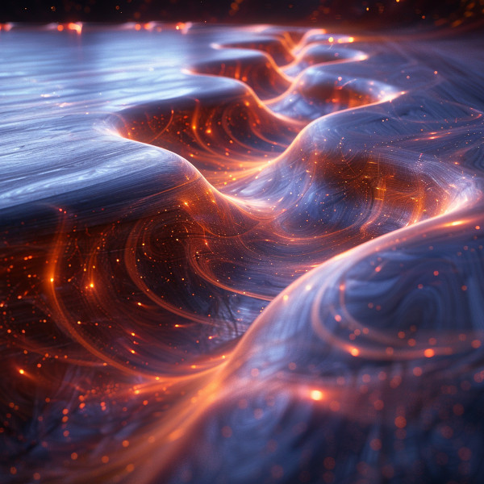
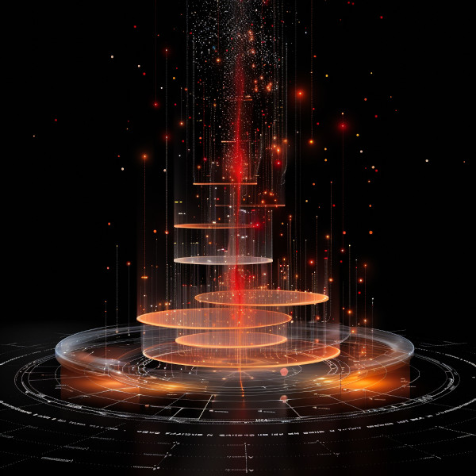

Understanding General Relativity: The Basics

Figure 1: Albert Einstein created the General Relativity model used in today’s physics
Imagine space as a large, flexible fabric, like a trampoline. When you place a heavy object, like a bowling ball, on the trampoline, it causes the fabric to stretch and curve around the object. This is similar to how massive objects like stars and planets curve the space around them.
In the early 20th century, Albert Einstein proposed the theory of general relativity, which revolutionized our understanding of gravity. According to Einstein, gravity isn’t just a force between two objects; it’s a result of the curvature of space and time (which together make up “spacetime”) caused by these objects.
Here’s a simple breakdown:
Spacetime Curvature

Figure 2: Curvature of spacetime
In the realm of physics, spacetime is often visualized as a flexible, grid-like fabric that can be bent or curved by the presence of mass and energy. Much like placing a heavy object on a trampoline causes it to sag, massive celestial bodies like stars and planets warp the fabric of spacetime around them. This curvature is more pronounced with larger masses, creating gravitational effects that we observe as the force of gravity. The image of spacetime bending under the influence of mass helps illustrate how objects move through the universe, following the curved paths created by these distortions. This phenomenon is a fundamental aspect of Einstein’s theory of general relativity, reshaping our understanding of how gravity operates not as a force but as a consequence of spacetime’s curvature.
Gravity as a Path

Figure 3: Gravity as a path
Gravity, as described by Einstein’s theory of general relativity, is not simply a force pulling objects towards one another. Instead, it is a path that objects follow through the curved fabric of spacetime. Imagine spacetime as a vast landscape shaped by the presence of mass and energy. Massive objects like stars and planets create depressions or curves in this landscape. When smaller objects move through this curved spacetime, they naturally follow the contours created by these depressions. For instance, the Earth orbits the Sun not because it is being pulled by an invisible force, but because the Sun’s immense mass curves spacetime in such a way that the Earth travels along this curved path. This understanding of gravity as a geometric property of spacetime fundamentally changes our view of the universe and the forces that shape it.
Time Dilation

Figure 4: Time Dilation
Time dilation is a fascinating consequence of the curvature of spacetime as described by Einstein’s theory of general relativity. This phenomenon occurs because time flows differently depending on the strength of gravitational fields. Near massive objects, where spacetime is significantly curved, time passes more slowly compared to regions with weaker gravitational influence. For example, time ticks slightly slower on the surface of the Earth than it does in outer space. This effect, although minuscule under everyday conditions, becomes pronounced in extreme environments, such as near a black hole. Time dilation has been experimentally verified and plays a crucial role in technologies like GPS, which must account for these differences to provide accurate positioning information. Understanding time dilation not only deepens our comprehension of gravity but also challenges our perceptions of time itself.
Conclusion
By understanding how mass and energy can warp the fabric of spacetime, we can explain many cosmic phenomena, from the orbits of planets to the bending of light around stars (gravitational lensing).